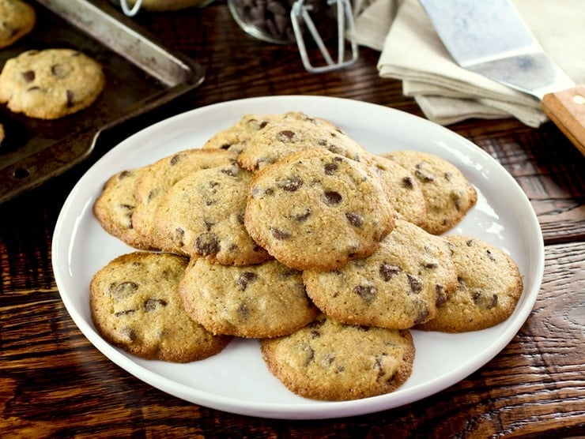

Chocolate Chip Cookies

Super bomb looking cookies that I found randomly on the internet
Ingredients
- 1 cup unsalted butter
- 1 1/2 cups brown sugar
- 2 tablespoons honey
- 2 teaspoons vanilla
- 1/4 teaspoon kosher salt
- 2 large eggs
- 1 1/2 cups matzo cake meal
- 1/4 cup matzo meal
- 2 cups chocolate chips
Steps
- Preheat oven to 350 degrees F. Cream the butter with brown sugar, honey, vanilla and salt. Add eggs and mix well.
- Mix in cake meal and matzo meal.
- Stir in the chocolate chips
- Drop by tablespoons onto ungreased cookie sheets 2 inches apart. Press down slightly to flatten.
- Bake at 350 degrees for 12-15 minutes until slightly golden. These are great when slightly warmed, dipped in a cold, frothy glass of milk. Yum!